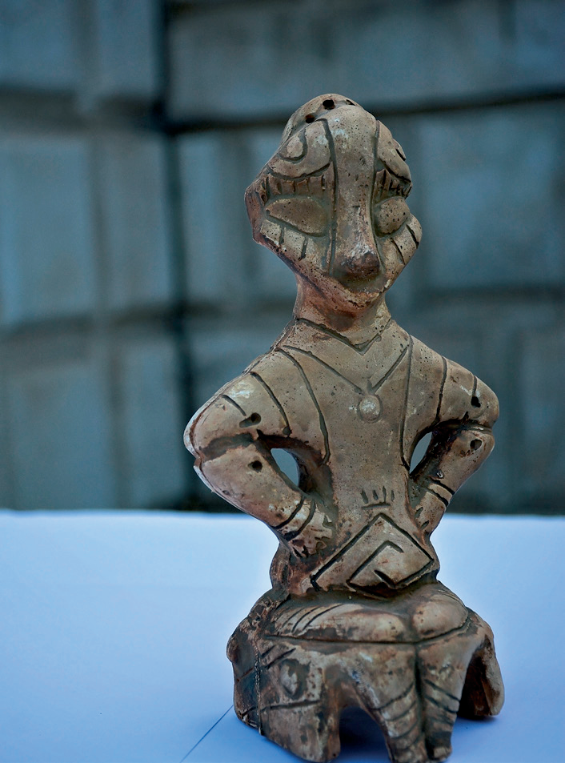
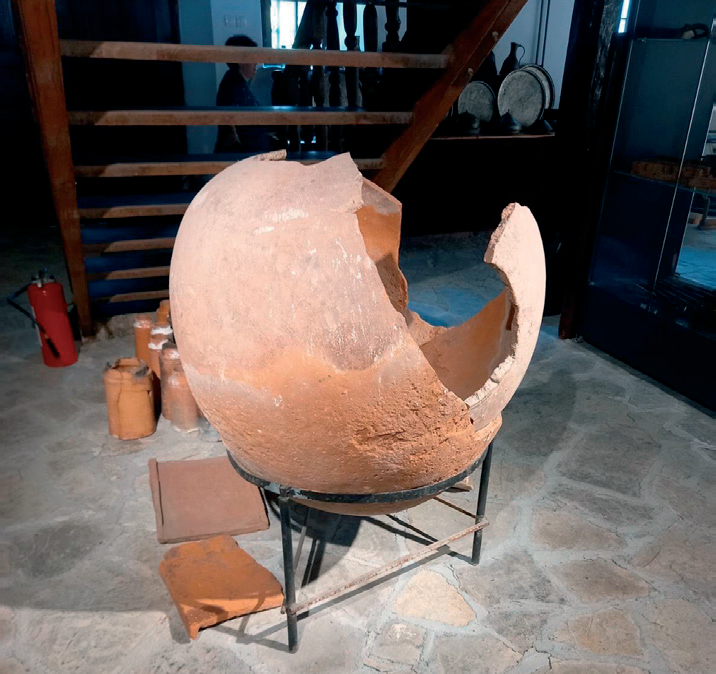

Në “Muzeun Kombëtar të Kosovës” panë shumë gjëra, por u ndalën te “Hyjnesha në fron” - figurinë antropomorfe nga argjila e pjekur. Ajo paraqet figurën e një hyjnie femër, pra simbolizon kultin e idhullit të nënës.
“Hyjnesha në fron” është një nga artefaktet më të çmueshme arkeologjike të Kosovës dhe, kështu, tashmë njihet edhe si simbol i qytetit të Prishtinës.
(Marrë nga “Guidë Arkeologjike e Kosovës”, Ministria e Kulturës, Rinisë dhe Sportit & Instituti Arkeologjik i Kosovës)

Në “Muzeun Etnografik të Gjakovës” panë amforat. Aty Artani mësoi se amforat janë enë dheu që janë nxjerrë nga toka. Kjo që ata e panë është enë në të cilën njerëzit kanë ruajtur drithëra në tokë.
Pastaj, nëna u shpjegoi fëmijëve:
- Njerëzit që i kanë zbuluar këto objekte quhen arkeologë. Ata gërmuan tokën dhe gjetën objekte, si: maja shigjete, gurë varri, tempuj, thesare të ndryshme (monedha, stoli e gjëra të tjera me vlerë), që përfaqësojnë kulturën materiale dhe shpirtërore të jetës së një populli.